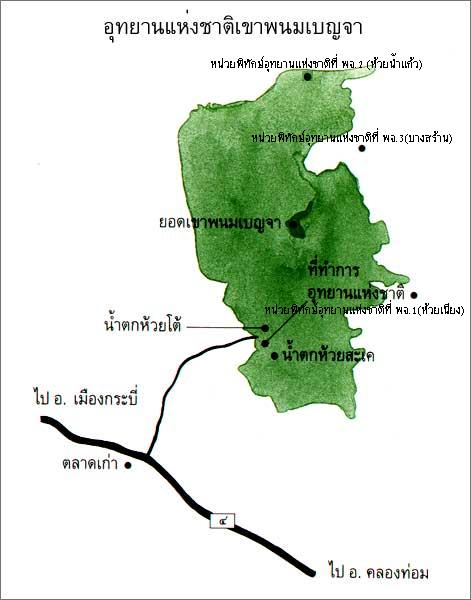
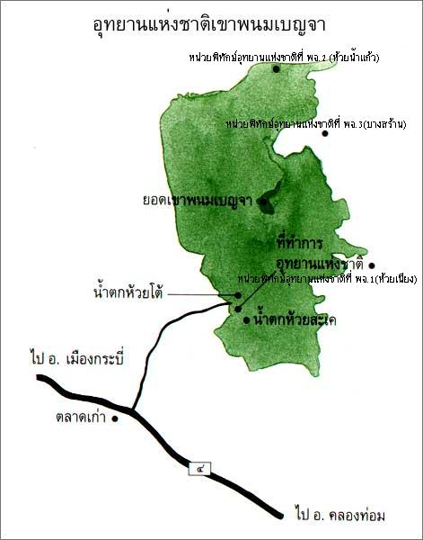

อ่าวนาง กระบี่ แผนที่
ถ้าใครมีโอกาสมาเที่ยวกระบี่ แล้วอย่าลืมแวะมาเที่ยวหาดถ้ำพระนางกันด้วยนะครับ เชื่อกันว่าสถานที่แห่งนี้เป็นที่สถิตของพระนางอันศักดิ์สิทธิ์ ซึ่งชาวเรือแถบนี้เคารพสักการะ
สวัสดีครับ..พอดีผมได้มีโอกาสไปเที่ยวกระบี่มาครับ และได้ไปเที่ยวที่อุทยานแห่งชาติเขาพนมเบญจามาเลยจะมารีวิวให้ชมกันครับว่า มีความน่าสนใจยังไงและสามารถเดินทางไปยังไงได้บ้าง สำหรับการเดินทางนั้นผมเริ่มต้นจากที่สนามบินกระบี่ครับ ก็คือลงเครื่องเช่ารถแล้วก็ขับตรงมาที่อุทยานแห่งขาติเขาพนมเบญจา
“อุทยานแห่งชาติเขาพนมเบญจา” ป็นอุทยานทางบกซึ่งประกอบด้วยเทือกเขาสูงสลับซับซ้อนในแนวเหนือจรดใต้มียอดเขาพนมเบญจาซึ่งสูง 1,397 เมตร จากระดับน้ำทะเล ซึ่งสูงที่สุดในกระบี่ นอกเหนือจากการเดินป่าทิวทัศน์ธรรมชาติสวยงามแล้ว ที่นี่ยังมีทั้งลำธาร ถ้ำ น้ำตกและสัตว์ป่าหลายชนิดอาศัยอยู่ เช่น สมเสร็จ เลียงผา หมีควาย เสือปลา สำหรับพวกชอบส่องนก ก็มีนกที่สามารถพบเห็นกว่า 218 ชนิด เช่น นกอินทรี นกเงือก นกหัวขวาน เป็นต้น
 

"อุทยานแห่งชาติเขาพนมเบญจา" เส้นทางการเดินทาง เริ่มจาก สนามบิน วิ่งรถมาที่สามแยกตลาดเก่า วิ่งต่อไปตามถนนเพชรเกษมเส้นทางศรีตรังประมาณ 1 ก.ม.แล้วเลี้ยวซ้ายตามเส้นทางตลาดเก่า-บ้านห้วยโต้ ประมาณ 20 กม. ก็จะถึงที่ทำการอุทยาน เดินเข้าป่าไปอีกประมาณ 500 เมตรก็จะถึงอุทยานแห่งชาติเขาพนมเบญจา ครับ
เส้นทางการเดินป่า มี 2 ทาง คือ ทางแรก ใช้เวลาในการเดินทาง 4 วัน 3 คืน โดยการเริ่มต้นจากน้ำตกห้วยโต้ ซึ่งจะต้องปีนข้ามน้ำตกขึ้นไปชั้นบนสุดแล้วเดินต่อไปยังลำธาร เลี้ยวซ้ายทางต้นยางใหญ่พักค้างคืนที่เขาลูกช้าง 1 คืน รุ่งขึ้นจึงเดินต่อไปค้างคืนที่ควนน้ำค้างอีก 1 คืน จากนั้นเดินต่อไปจนถึงเชิงเขาพนม รุ่งเช้าอีกวันหนึ่งจึงเริ่มขึ้นยอดเขา พักค้างบนยอดเขาอีก 1 คืน
เส้นทางที่สอง เดินทางโดยรถยนต์ไปที่ฐานปฏิบัติการบางสร้าน ระยะทางประมาณ 60 กิโลเมตร เส้นทางนี้ใช้เวลาในการพักค้าง และเดินทาง 3 วัน 2 คืน โดยเดินจากฐานปฎิบัติการบางสร้านไปสู่ยอดเขาพนมเบญจา เป็นเวลา 1 วัน และพักค้างบนยอดเขาพนมเบญจา 1 คืน จากนั้นเดินลงจากยอดเขามาพักค้างคืนที่ควนน้ำค้างอีก 1 คืน และในวันรุ่งขึ้นเดินจากควนน้ำค้างลงมาที่ทำการอุทยานฯ ซึ่งทั้งสองเส้นทางจะได้พบกับธรรมชาติที่สวยงามของพันธุ์ไม้ สัตว์ป่า ถ้ำ เพิงผา น้ำตก ธารน้ำ ทะเลหมอก จุดชมวิวที่สามารถมองเห็นตัวเมืองกระบี่ และอากาศที่เย็นสบายตลอดปี
น้ำตกห้วยโต้ เป็นน้ำตกที่ตกจากหน้าผา มีถึง 11 ชั้นบางชั้นสูงประมาณ 70-80 เมตร แต่ละชั้นมีแอ่งน้ำใหญ่ น้ำใสสะอาด สามารถลงเล่นน้ำได้ ต่อมาคือ น้ำตกห้วยสะเด ห่างจากที่ทำการอุทยานฯ ประมาณ 1.2 กิโลเมตร เป็นน้ำตกจากหน้าผาสูง มี 3 ชั้น
เขาพนมเบนจา นี้มีต้นกำเนิดจากเทือกเขาพนมเบญจา มีสภาพป่าที่ยังคงอุดมสมบูรณ์ มีเทือกเขาสูงสลับซับซ้อนในแนวยาวตั้งแต่เหนือจรดใต้ ความสูงราว 1,397 เมตรจากระดับน้ำทะเล ซึ่งถือว่าเป็นเทือกเขาสูงที่สุดในกระบี่ เทือกเขานี้อยู่ในเขตมรสุมเมืองร้อน จึงทำให้อากาศอบอุ่นและชุ่มชื้นตลอดปี ช่วงหน้าฝนชุกอยู่ระหว่าง เดือนมิถุนายน-ตุลาคมคม ยอดเขาจะมีไอหมอกปกคลุมเกือบตลอดทั้งปี
สำหรับการพักค้างคืน ทางอุทยานฯ มีเต็นท์ให้บริการ สำหรับ 2-8 คน ราคาหลังละ 150-600 บาท/คืน/หลัง หรือจะนำเต็นท์มาเอง เสียค่าธรรมเนียมกางเต้นท์ 30 บาท/คืน/หลัง รายละเอียดติดต่ออุทยานแห่งชาติเขาพนมเบญจา ได้เลย ค่ะ ^ ^
ถ้าใครมีโอกาสมาเที่ยวกระบี่ แล้วอย่าลืมแวะมาเที่ยวหาดถ้ำพระนางกันด้วยนะครับ เชื่อกันว่าสถานที่แห่งนี้เป็นที่สถิตของพระนางอันศักดิ์สิทธิ์ ซึ่งชาวเรือแถบนี้เคารพสักการะ